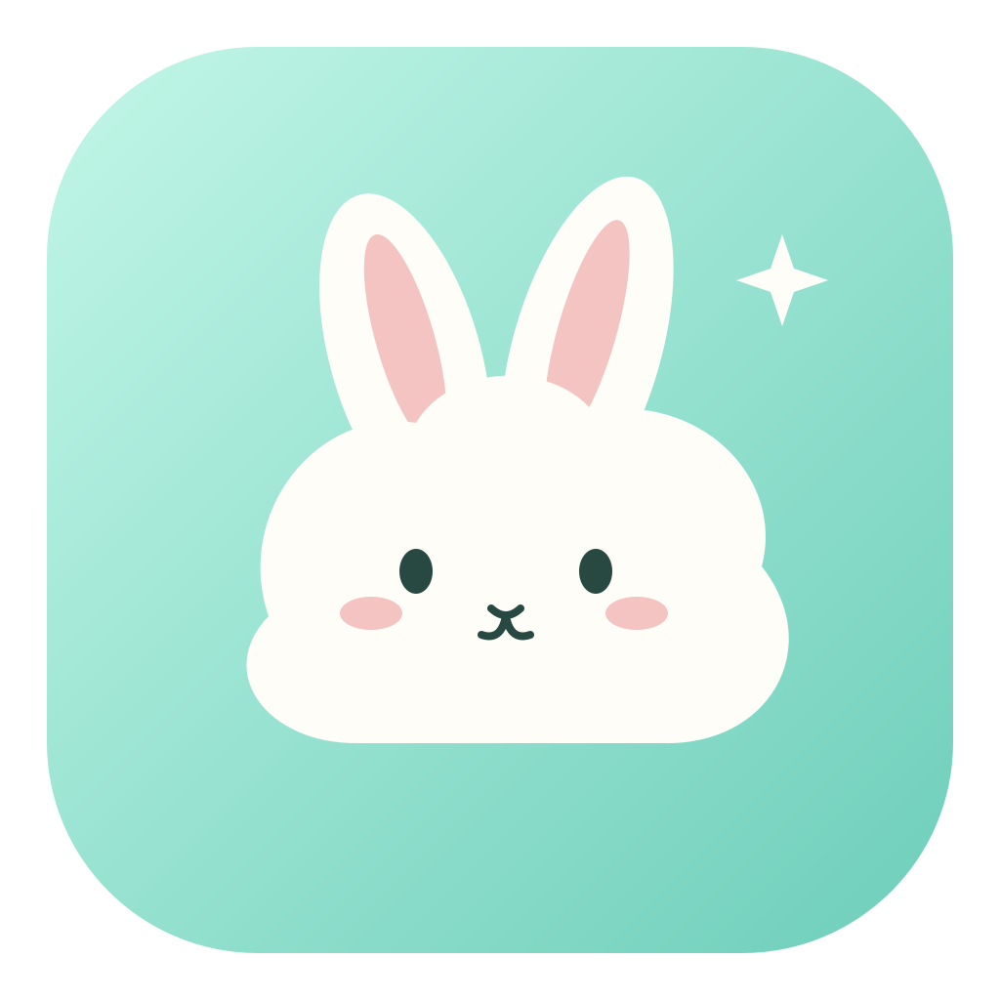

选择适合的模型
保留自定义供应商与协议选择，改进 TuZi 兼容路径。具体模型能力以供应商实际开放的接口为准。

DSH—TuZi为你的工作方式，留一点自由
连接你选择的模型，读懂图片、编写代码、完成任务。
让好用的 AI，成为桌面上的日常。
独立社区项目 · 基于 DeepSeek Harness 构建
MADE FOR YOUR EVERYDAY
保留自定义供应商与协议选择，改进 TuZi 兼容路径。具体模型能力以供应商实际开放的接口为准。
从模型目录和明确的能力信息提供默认建议，保留手动调整。未知模型会留给你确认。
延长流式等待时间，增加临时错误重试。实际连接体验仍取决于模型与服务商线路。
YOUR NEXT CHAPTER
每个可下载版本都会标明平台、签名状态和文件校验值。
选择与你的设备匹配的安装包。
完整社区版正在构建与验收。通过验证的安装包会在这里提供。
系统要求、安装说明和已知限制随版本提供。
DSH-TuZi 基于 DeepSeek Harness 构建，聚焦自定义模型、连接体验与桌面使用。它是独立社区版，与 DeepSeek、TuZi 官方没有隶属或背书关系。
云朵兔已接入真实任务状态，支持思考、工作、等待、完成和错误反馈。首版面向 macOS Apple Silicon；其他平台与 Claude 真实通道仍待验收。